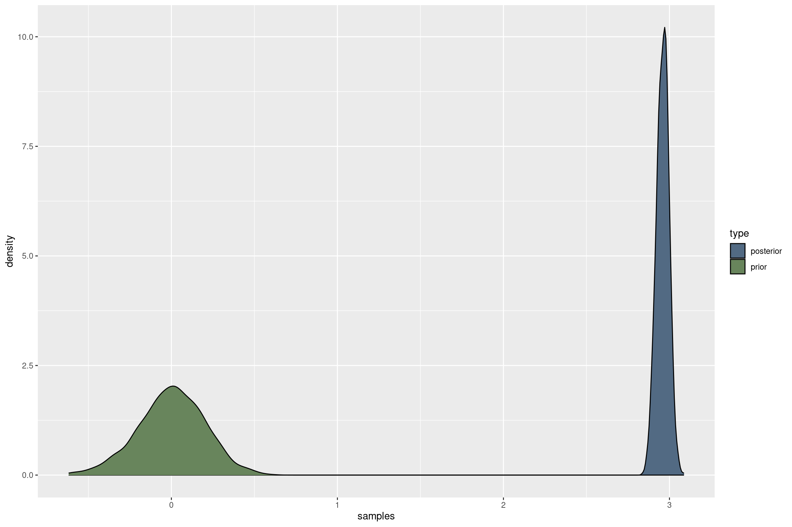
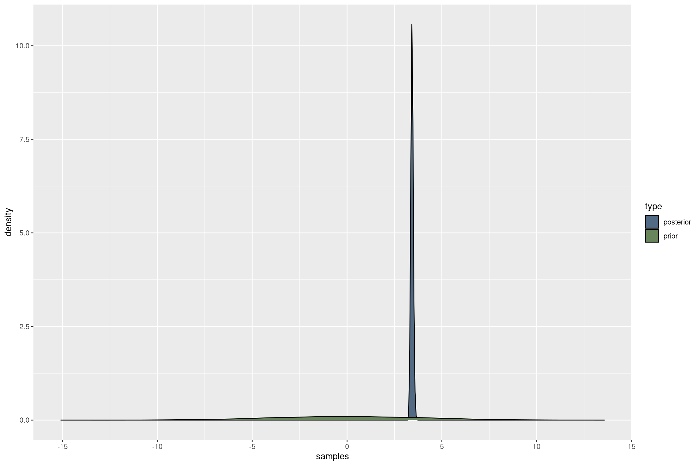
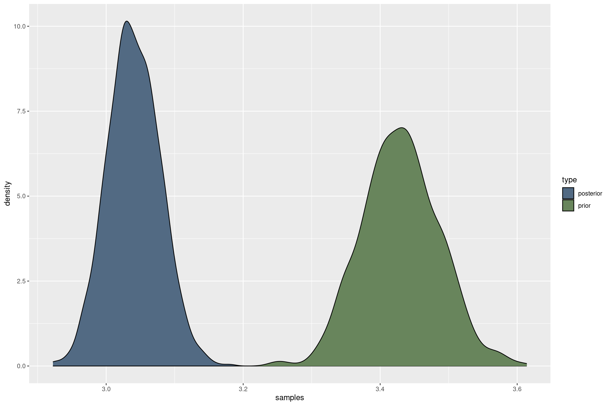

library(brms)
library(ggplot2)
library(knitr)
library(tidyverse)
data(iris)
# this gives us the default brms priors
get_prior(Sepal.Width ~ 1, data = iris)
# set a custom prior for the intercept
# NOTE: the standard deviation in the normal prior lets us specify our strength of belief
# in the mean specified
priors = set_prior("normal(0,0.2)", class = "Intercept")
fit <- brm(Sepal.Width ~ 1,
data = iris,
family = gaussian(),
prior = priors,
sample_prior = TRUE,
silent = 2,
refresh = 0
)
# compare prior to posterior
# extract draws from first chain
draws = as_draws_array(fit)[,1,, drop = TRUE]
samples = rbind(
data.frame(
type = "prior",
samples = as.numeric(draws[, "prior_Intercept"])
),
data.frame(
type = "posterior",
samples = as.numeric(draws[, "b_Intercept"])
)
)
kable(
samples %>% group_by(type) %>% summarize(
n = n(),
mean = mean(samples),
sd = sd(samples)
),
digits = 3
)
p = ggplot(samples, aes(x = samples)) +
geom_density(aes(fill = type)) +
scale_fill_manual(values = c('#526A83','#68855C'))
pBayesian Inference
1 Bayes Theorem
\[ p(A|B) = \frac{p(B|A)p(A)}{p(B)} \]
In statistical modelling, the Bayes theorem infers the probability of observing the parameters of interest, given our prior beliefs about those parameters and the likelihood of the data given the parameters:
\[ p(\theta|y) = \frac{p(y|\theta)p(\theta)}{p(y)} \]
This is in contrast with a frequentist (maximum likelihood) approach, in which we aim to estimate non-random, fixed parameters using the likelihood of the data given those parameters only (\(p(y|\theta)\)).
The overall likelihood of the data (\(p(y)\)) only serves as a scaling constant and is therefore ignored in parameter estimation (\(p(\theta|y) \propto p(y|\theta)p(\theta)\))
2 Estimating the mean of a normal distribution
In a Bayesian framework, we formulate our problem in terms of the assumed distribution of our data (likelihood) and the prior distributions of our parameters we wish to estimate. The parameter space (solution space) is only constrained by the prior choice, so it becomes important to explore the posterior distribution in an efficient way. The available prior distributions depend on the MCMC algorithm being used. Stan (backend of brms), uses an HMC sampler and allows for non-conjugant priors, meaning virtually any prior distribution for any parameter can be chosen, regardless of the likelihood function of the data.
\[ \begin{align} \mathbf{y} &\sim \mathbf{N}(\mu, \sigma_{e}^{2}) \\ \mu &\sim N(\mu_{prior}, \sigma_{prior}^{2}) \end{align} \]
The probability of our parameters given the data (\(p(\mu|y)\)) is proportional to the product of the likelihood of the data given our parameters (\(p(y|\theta)\), which is a normal density function, and the prior likelihood of the parameters (\(p(\theta)\)), which is a normal density function again, with mean and standard deviation reflecting our prior belief in location and our confidence in that location of the mean.

2.1 Updating priors from existing evidence
Bayesian Inference allows us to incorporate actual prior evidence in the estimation of parameters. For example, we might have conducted a previous experiment and we arrived at an estimate of the mean of our observations. We then do another experiment of similar setup and want to update our mean estimate. In that case, we can use the posterior distribution of the mean from the first experiment as the prior on that mean for the second experiment:
\[ p(\theta|y)_{FirstExperiment} \propto p(y|\theta)p(\theta) \]
Plugging in the posterior from the first experiment as the prior for the second:
\[ p(\theta|y)_{SecondExperiment} \propto p(y|\theta)p(\theta|y)_{FirstExperiment} \]
library(brms)
library(ggplot2)
library(knitr)
library(tidyverse)
data(iris)
# subset first 50 observations
iris_first = iris[1:50,]
# this gives us the default brms priors
get_prior(Sepal.Width ~ 1, data = iris_first)
# set a "flat" prior, no prior evidence
priors = set_prior("normal(0,4)", class = "Intercept")
fit_first <- brm(Sepal.Width ~ 1,
data = iris_first,
family = gaussian(),
prior = priors,
sample_prior = TRUE,
silent = 2,
refresh = 0
)
# compare prior to posterior
# extract draws from first chain
draws_first = as_draws_array(fit_first)[,1,, drop = TRUE]
samples_first = rbind(
data.frame(
type = "prior",
samples = as.numeric(draws_first[, "prior_Intercept"])
),
data.frame(
type = "posterior",
samples = as.numeric(draws_first[, "b_Intercept"])
)
)
kable(
samples_first %>% group_by(type) %>% summarize(
n = n(),
mean = mean(samples),
sd = sd(samples)
),
digits = 3
)
p_first = ggplot(samples_first, aes(x = samples)) +
geom_density(aes(fill = type)) +
scale_fill_manual(values = c('#526A83','#68855C'))
p_first
# second experiment, insert prior evidence about the mean
# get mean and standard deviation from posterior of mean from first experiment
mu_prior = mean(samples_first$samples[samples_first$type == "posterior"])
sd_prior = sd(samples_first$samples[samples_first$type == "posterior"])
priors = set_prior(paste("normal(", mu_prior, ",", sd_prior, ")", sep = ""), class = "Intercept")
# second subset of data: remaining
iris_second = iris[51:nrow(iris),]
fit_second <- brm(Sepal.Width ~ 1,
data = iris_second,
family = gaussian(),
prior = priors,
sample_prior = TRUE,
silent = 2,
refresh = 0
)
# compare prior to posterior
# extract draws from first chain
draws_second = as_draws_array(fit_second)[,1,, drop = TRUE]
samples_second = rbind(
data.frame(
type = "prior",
samples = as.numeric(draws_second[, "prior_Intercept"])
),
data.frame(
type = "posterior",
samples = as.numeric(draws_second[, "b_Intercept"])
)
)
kable(
samples_second %>% group_by(type) %>% summarize(
n = n(),
mean = mean(samples),
sd = sd(samples)
),
digits = 3
)
p_second = ggplot(samples_second, aes(x = samples)) +
geom_density(aes(fill = type)) +
scale_fill_manual(values = c('#526A83','#68855C'))
p_second

3 Multivariate Animal Model in brms
\[ \mathbf{Y} = \mathbf{XB} + \mathbf{ZU} + \mathbf{E} \]
Likelihood
\[ \mathbf{Y} \sim \mathbf{MVN}(\mathbf{XB} + \mathbf{ZU}, \boldsymbol{\Sigma}_E) \]
Priors
\[ \begin{align} \mathbf{B} &\sim \mathbf{U}(-Inf,Inf)\\ \mathbf{U} &\sim \mathbf{MVN}(\mathbf{0}, \boldsymbol{\Sigma}_U) \\ \boldsymbol{\Sigma}_U &= \mathbf{diag(S)}_U\boldsymbol{\Omega}_U\mathbf{diag(S)}_U \\ \mathbf{S}_U &\sim \mathbf{Cauchy}(0,5)\\ \boldsymbol{\Omega}_U &\sim \mathbf{LKJ}(1) \end{align} \]
3.1 Example
library(pacman)
p_load(brms, cmdstanr, BGLR, pedigreemm, tidyverse)
# only have to be done once
# install_cmdstan(cores = 6)
# load the BGLR data
data(milk)
# get pedigree and make A
P <- pedCow
mids <- P@label
# make subset
midsIn <- as.character(unique(milk$id))[1:300]
L <- as(t(relfactor(P)), "dgCMatrix")
A <- tcrossprod(L[match(midsIn, mids),])
rownames(A) <- colnames(A) <- midsIn
A = as(A, "matrix")
# make subset of data
D <- milk[milk$id %in% midsIn,]
D$idA <- factor(D$id, levels = midsIn)
D$idP <- as.character(D$id)
##################################################
### create stand model - just for sanity check ###
##################################################
# the model formula
brmf <- brmsformula(
mvbind(
milk,
fat
) ~ 1 +
factor(lact) +
herd +
(1|g|gr(idA, cov = A)) + # additive genetic effect
(1|p|gr(id)), # PE effect
data = D,
data2 = list(A = A)
)
# look at default priors
get_prior(
mvbind(
milk,
fat
) ~ 1 +
factor(lact) +
herd +
(1|g|gr(idA, cov = A)) + # additive genetic effect
(1|p|gr(id)), # PE effect
data = D,
data2 = list(A = A)
)
stanCode <- make_stancode(
formula = brmf,
data = D,
data2 = list(A = A),
# family = poisson("log"), # for a poisson response with log link function
family = gaussian()
)
stanData <- make_standata(
formula = brmf,
data = D,
data2 = list(A = A),
# family = poisson("log"), # for a poisson response with log link function
family = gaussian()
)
# check the stan code
# this is particularly useful to check the priors that brms imposed on the parameters.
# the default prior choice by brms follows the stan recommendations for the most part and
# are excellent!
stanCode
##########################################
### brms run - bivariate animal model ###
##########################################
# more iterations for a more complex model
niter = 2000
chains = 5
cores = 5
threads = 1
mod <- brm(
formula = brmf,
data = D,
data2 = list(A = A),
family = gaussian(),
# family = poisson("log"), # for a poisson response with log link function
chains = chains,
cores = cores,
threads = threading(threads),
backend = "cmdstanr",
iter = niter
)
# extract posterior of covariance-matrices
vcp <- VarCorr(mod, summary = FALSE)
# additive genetic covariance matrix
G <- vcp$idA$cov
# pe covariance matrix
PE <- vcp$id$cov
# residucal covariance matrix
R <- vcp$residual$cov
# phenotypic
P <- G + PE + R
# extract the variance components for the traits
vA <- matrix(as.numeric(NA), nrow = nrow(G), ncol = 2)
vP <- matrix(as.numeric(NA), nrow = nrow(G), ncol = 2)
colnames(vA) <- colnames(vP) <- c("milk", "fat")
# fill matrices with diagonal elements of the var-covar matrix
for(i in 1:nrow(G)) vA[i,] <- diag(G[i,,])
for(i in 1:nrow(G)) vP[i,] <- diag(P[i,,])
# h2
h2 <- colMeans(vA / vP)
h2_sd <- apply(vA / vP, 2, sd)
h2Out <- data.frame(
Trait = c("milk", "fat"),
h2 = h2,
h2_sd = h2_sd
)
vAmeans <- colMeans(vA)
vPmeans <- colMeans(vP)
#######################
### Breeding Values ###
#######################
up = ranef(mod, summary = FALSE)
upA = up$idA
ids <- rownames(upA[1,,])
idsIn <- ids
out <- list()
# make some predictions
for(i in 1:length(idsIn)) {
tmp <- tibble(
id = idsIn[i]
)
# now get the blups for this animals
thisUp <- upA[,match(idsIn[i], upIds),,drop = TRUE]
# make prediction
tmp <- tmp %>%
mutate(
milkPred = mean(thisUp[,"milk_Intercept"]),
milkPred_PEV = var(thisUp[,"milk_Intercept"]),
milkPred_REL = 1 - (milkPred_PEV / vAmeans["milk"]),
fatPred = mean(thisUp[,"fat_Intercept"]),
fatPred_PEV = var(thisUp[,"fat_Intercept"]),
fatPred_REL = 1 - (fatPred_PEV / vAmeans["fat"]),
)
out[[i]] <- tmp
}
datPred <- bind_rows(out)